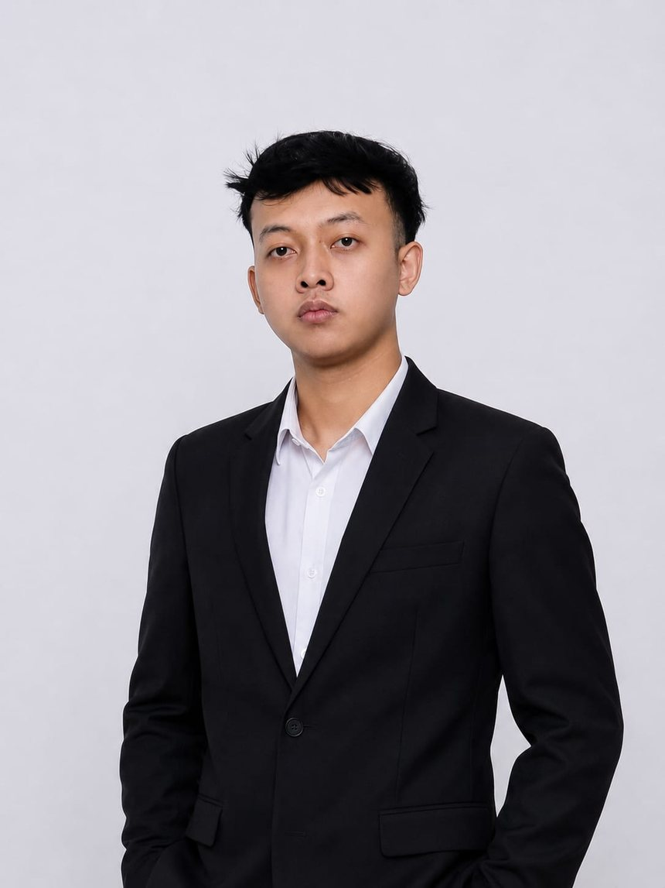

Mochamad Ramadhan
Videographer and video editor from Sumedang, West Java. I turn raw footage into short, rhythmic stories, with a teacher's habit of making everything clear.
Motorcycle & automotive edits
Short-form reels shot and cut for Instagram. Tap a title to watch the original post.
Credits
Projects where I held a specific role, from school films to campus events.
-
00:00:00:00
Director, Cameraman & Editor
Sociology class filmA school assignment I took end to end: directing, shooting and cutting it myself.Watch full film on Drive ↗ -
00:00:00:00
Boom Operator
High school video projectOn set with the crew, keeping the dialogue clean and close to the mic.Watch full video on YouTube ↗ -
00:00:00:00
Videographer & After Movie
PGSD Funfest 2023As part of the PDD team (Publication, Decoration & Documentation), I filmed the event and cut its after movie.Watch full video on YouTube ↗
Hi, I'm Ramadhan.
It began the first time I held a DSLR camera in high school. I didn't plan a career. I just wanted to see how the world looked through a lens.
That curiosity turned into a habit: shooting, cutting and cutting again until the rhythm felt right. I graduated from SMAN 1 Sumedang, then earned my bachelor's degree in Elementary School Teacher Education (PGSD) at Universitas Pendidikan Indonesia, graduating cum laude.
Learning how to explain things clearly to children changed the way I edit. Every cut should make the story easier to follow, and every frame needs a reason to be there. These days I film and edit what I love most: motorcycles, motion and the small details people usually miss.
Outside the timeline, I also build Android learning apps and have a published research paper in a national journal.

- High school
First DSLR
The moment filming and editing became a hobby.
- SMAN 1 Sumedang
Behind the boom
Joined a school video project as boom operator, and directed and edited a sociology film.
- 2023
PDD at Universitas Pendidikan Indonesia
Videographer and after movie editor for PGSD Funfest 2023.
- August 2026
Bachelor of Education, cum laude
GPA 3.83 / 4.00 in PGSD, Universitas Pendidikan Indonesia.
- Now
Looking for the next project
Open to video editor and videographer roles.